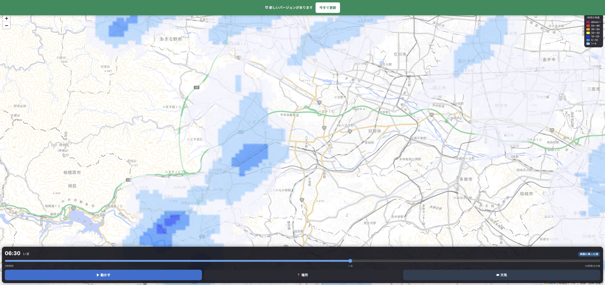

本番に出しました
アプリを開き直すと、乗務タイマーの右隣に増えています。
ボタンの場所
この並びは、どのページを開いていても同じです
どのページからでも行き来できます。雨雲レーダーβの中にも同じボタンがあるので、そこから乗務タイマーやIC判定へ戻れます。
本番で見たもの
| 確認したこと | 結果 |
|---|
| ページの名前 | Cabis ｜ 雨雲レーダーβ |
| タブの並び（4ページとも） | 乗務タイマー / 雨雲レーダーβ / IC判定 / 空港ツール |
| いま見ているページの印 | 正しく付いている |
| 雨雲のコマ数 | 63コマ（3時間前 〜 約14時間先） |
実際の画面

八王子のあたり。前に見ていた場所から始まります
まとめ
- 名前は 雨雲レーダーβ。乗務タイマーの右隣です。
- どのページからでも、同じボタンで行き来できます。
- 雨雲・場所えらび・天気の3つが入っています。
- テスト1203件すべて通っています。